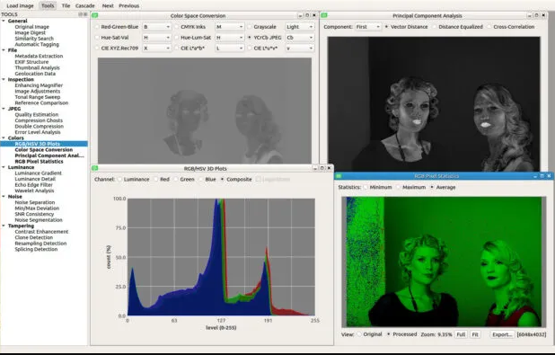

◉ O que é o Sherloq?
“Sherloq é um projeto de pesquisa pessoal sobre a implementação de um ambiente totalmente integrado para
análise forense de imagens digitais. Não pretende ser uma ferramenta automática que decide se uma imagem
é forjada ou não (essa ferramenta provavelmente nunca existirá …)”. (Bartoli, 2020)
Sherloq é uma excelente ferramenta open soucer para realizar analise forense de uma imagem. Além de leve,
também é completa comparando com software do mercado super fatorados.
A aplicação lembra muito o programa ImageJ, com os recursos que esse programa tem e mais um pouco.
◉ Que os recursos existentes?
◉ Interface
• GUI moderna baseada em Qt com gerenciamento de janela de ferramentas múltiplas
• Suporte para muitos formatos (JPEG, PNG, TIFF, BMP, WebP, PGM, PFM, GIF)
• Visualizador de imagens altamente responsivo com panorâmica e zoom em tempo real
• Muitos algoritmos de última geração para experimentar interativamente
• Exporte os resultados visuais e textuais da análise
• Ajuda online extensa com explicações e tutoriais
◉ Em geral
• Imagem original : exibe a imagem de referência inalterada para inspeção visual
• Resumo do arquivo : recupera informações do arquivo físico, criptografia e hashes perceptivos
• Editor hexadecimal : abre um editor hexadecimal externo para mostrar e editar bytes brutos
• Pesquisa semelhante : navegue nos serviços de pesquisa online para encontrar imagens visualmente semelhantes
◉ Metadados
• Estrutura do cabeçalho : despeja a estrutura do cabeçalho do arquivo e exibe uma visão interativa
• EXIF Full Dump : verifique os metadados do arquivo e reúna todas as informações disponíveis
• Análise de miniaturas : extraia miniaturas incorporadas opcionais e compare com as originais
• Dados de geolocalização : recupere dados de geolocalização opcionais e mostre-os em um mapa mundial
◉ Inspeção
• Enhancing Magnifier : lupa com melhorias para melhor identificação de falsificações
• Histograma de canal : exibe canais de uma única cor ou histograma interativo RGB composto
• Ajustes globais : aplique ajustes de imagem padrão (brilho, matiz, saturação, …)
• Comparação de referência : abre uma visão dupla sincronizada para comparação com outra imagem
◉ Detalhe
• Gradiente de luminância : analisa as variações de brilho horizontal / vertical na imagem
• Echo Edge Filter : use filtros derivados para revelar regiões artificiais fora de foco
• Limiar de wavelet : reconstruir a imagem com diferentes limiares de coeficiente de wavelet
• Divisão de frequência : divide a luminância da imagem em componentes de alta e baixa frequência
◉ Cores
• Gráficos RGB / HSV : exibe gráficos 2D e 3D interativos de valores de pixel RGB e HSV
• Conversão de espaço : converter canais RGB em espaços HSV / YCbCr / Lab / Luv / CMYK / Gray
• Projeção PCA : use PCA colorido para projetar pixels nos componentes mais salientes
• Estatísticas de pixel : calcule os valores RGB mínimo / máximo / médio para cada pixel
◉ Barulho
• Separação de ruído : estimar e extrair diferentes tipos de componentes de ruído de imagem
• Desvio Mín / Máx : realce os pixels que se desviam das estatísticas mínimas / máximas baseadas em blocos
• Valores de planos de bits : mostra planos de bits individuais para encontrar padrões de ruído inconsistentes
• Identificação PRNU : explorar o ruído do padrão do sensor introduzido por câmeras diferentes
◉ JPEG
• Estimativa de qualidade : extrair tabelas de quantização e estimar a última qualidade JPEG salva
• Análise de nível de erro : mostra a diferença de nível de pixel em relação a níveis de compressão fixos
• Compactação múltipla : use um modelo de aprendizado de máquina para detectar compactação múltipla
• JPEG Ghost Maps : destaca traços de diferentes níveis de compressão em imagens diferentes
◉ Adulteração
• Aprimoramento de contraste : analise a distribuição de cores para detectar aprimoramentos de contraste
• Falsificação de cópia-movimento : use descritores de recurso invariáveis para detecção de área clonada
• Splicing composto : explore estatísticas DCT para detecção automática de zona de splicing
• Reamostragem de imagem : estimar a interpolação de pixels 2D para detectar traços de reamostragem
◉ Vários
• Filtragem de mediana : detecta traços de processamento deixados pela filtragem de mediana não linear
• Mapa iluminante : estima a direção da luz local da cena em superfícies 3D estimadas
• Pixels mortos / quentes : detecta e corrige pixels mortos / quentes causados por imperfeições do sensor
• Estereograma Decodificador : decodificar imagens 3D ocultas em autostereogramas de olhos cruzados
◉ Instalação
Obs.: Essa instrução é somente para usuário de windows.
• Primeiro passo:
Realize o download do repositório: https://github.com/EloPo/sherloq.git Você pode baixar via zip ou linha de
comando.
• Linha de comando:
git clone https://github.com/EloPo/sherloq.git
Após baixado, vá na pasta do projeto, cd sherloq e execute os seguintes comandos:
> pip install virtualenv virtualenvwrapper-win
> mkvirtualenv sq
Depois de instalar, você deve ir para a pasta /gui e seguir os seguintes comandos:
> pip install -r requirements_win.txt
> python sherloq.py
Prontinho! Agora você poderá utilizar o sherloq.
